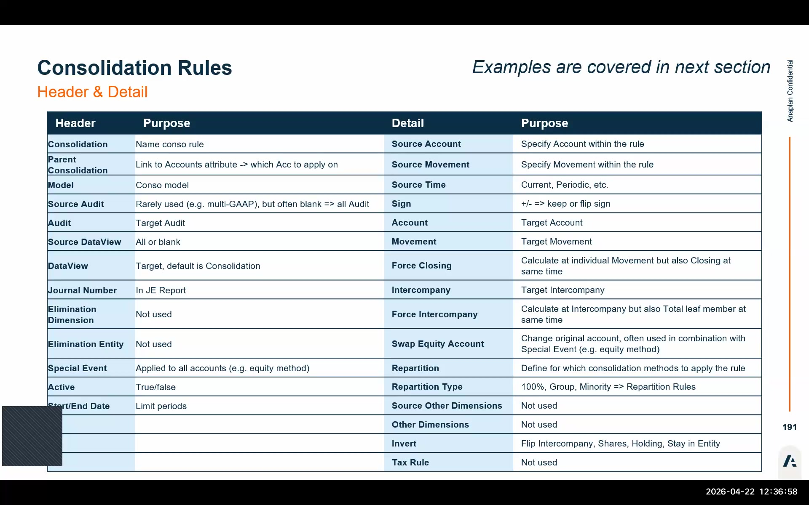
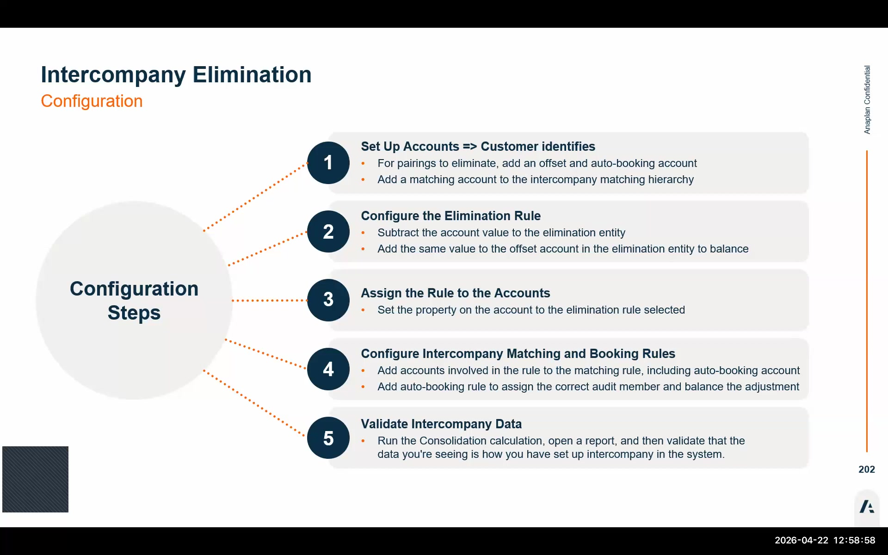
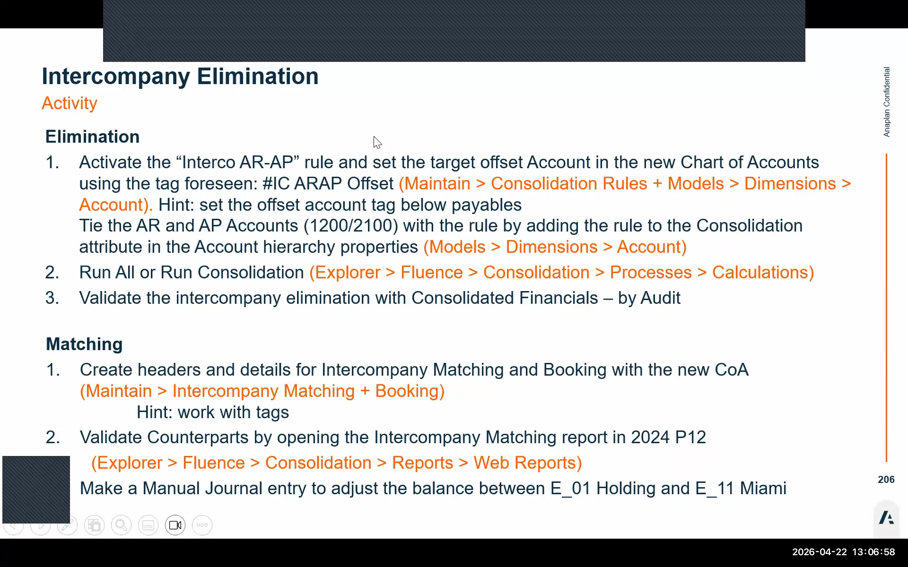

Consolidation Rules & Intercompany
Elimination rules, NCI, equity method, intercompany matching, and auto-booking
Consolidation Rule Architecture
Consolidation rules are the automated elimination engine in FCR. Each rule has a header that defines the scope and behavior, and one or more detail rows that define the actual posting entries.
Header Fields
| Field | Purpose | Notes |
|---|---|---|
| Name | Identifies the rule | Use descriptive names (e.g., "ARAP Elimination", "NCI Retained Earnings") |
| Parent consolidation | Groups related rules | E.g., all equity rules under an "Equity" parent group |
| Account (dimension attribute) | Links accounts to this rule via the account dimension's consolidation attribute | The primary scoping mechanism; most rules use this rather than source account overrides |
| Model | Limits rule to a specific consolidation model | Most customers have one model; can be used to create model-specific rules |
| Source audit | Filters input data to specific audit members | Leave blank to process all audit members |
| Target audit | Where elimination postings land | E.g., "IC Elimination" audit member |
| Source / Target data view | Optional filter to specific data views | Can filter to "Value" or "Conversion" data views |
| Special events | Bypasses account-based rule scope | Applies to ALL balance sheet + P&L accounts — use only for equity method processing |
| Active | true/false toggle | Inactive rules are silently skipped during consolidation — common oversight! |
| Start / End date | Restricts rule to specific periods | Useful for controlling when a rule takes effect (e.g., go-live period) |
The Elimination Dimension, Elimination Entity, Text rule, and Source other dimensions fields currently have no functional logic. Do not spend time configuring them — they are placeholders. Future releases may activate these fields.
Detail Row Fields
| Field | Purpose | Notes |
|---|---|---|
| Source accounts | Optional override of the account-level rule link | Usually blank; source comes from account dimension consolidation attribute |
| Movements (source) | Optional movement filter | E.g., specify "closing" to only process the closing movement |
| Target account | Where the elimination posts | Typically an offset account (e.g., ARAP_OFFSET) |
| Target movement | Movement dimension member for the posted entry | Usually the same as source movement |
| Source timeframe | YTD or MTD | EMEA typically uses YTD average; North America often uses MTD |
| Sign | + = keep source sign; – = flip sign | This is NOT debit/credit — it controls whether the amount is reversed |
| Force closing | Auto-calculates closing movement when running on individual movements | Useful when rules run on variation movements |
| Intercompany total leaf | Auto-calculates the total leaf intercompany member | Simplifies intercompany rules |
| Swap equity account | Equity method: swaps equity accounts to financial investment in associates | Equity method only |
| Repartition / Repartition type | Links to repartition rules defining the ownership-based formula | Controls how 100%, group%, and minority% splits are applied |
| Invert | Posts in the trading partner entity based on source entity value | Used in equity methods and financial investment eliminations |
Using Tags in Consolidation Rules
Tags (prefixed with #) allow consolidation rules to reference accounts by label rather than hardcoded IDs. This makes rules portable across customers — the same rule works on any customer's chart of accounts as long as the tag names match.
When entering tags in consolidation rules, the system does not validate the tag name against any existing account tags. A mistyped tag (e.g., #ICMATCH instead of #ICMATCHAR) will silently produce no matches, and the rule will appear to run successfully but post nothing. Always double-check tag names against the account dimension.

Repartition Rules
Repartition rules define the entity-level formulas that control how consolidation methods split amounts between the group share and minority interest. They are pre-configured during provisioning and referenced in consolidation rule detail rows.
Available Formula Types
- 100% — take the full amount (global method)
- Own% — take only the ownership percentage
- 1 – Own% — take the minority share (inverse of ownership)
- Proportional% — 50/50 split for proportional method
Important Constraints
- Formulas are managed by Anaplan — front-end users cannot create new formulas
- If a needed formula doesn't exist, submit a ticket to Anaplan support
- Repartition rules are configured at the direct ownership → managed ownership level
- Pre-configured at provisioning; rarely need additions
Consolidation Methods
Global Method (Full Consolidation)
Used for majority-owned subsidiaries (>50%). The full 100% of the subsidiary trial balance is loaded, then the equity elimination rule removes the intercompany cross-holding.
Non-Controlling Interest (NCI)
When a subsidiary is owned more than 50% but with outside minority shareholders, the NCI rules handle the minority share.
- Five separate NCI accounts are needed — one for each equity category:
- Retained Earnings (minority)
- Current Earnings (minority)
- Capital (minority)
- Dividends (minority)
- CTA (minority)
- Out-of-the-box rules exist; link them via the consolidation attribute on each NCI account
- Best practice: Use separate accounts for each of the 5 NCI categories — more transparent and auditable than a single NCI bucket
- Two approaches: (1) reclass both group and minority parts, or (2) reclass only the minority part
Equity Method (20–50% Ownership)
For associates where the group has significant influence but not control. Only the net income remains in the consolidated output.
Option A: Manual Journal
- Post a manual journal for the net income amount
- Simple but requires manual work each period
- Subject to human error
Option B: Special Event Rule (Recommended)
- Use a consolidation rule with Special Events enabled
- Eliminates the entire trial balance of the subsidiary
- Posts one line: the net income amount
- More automated and auditable
Proportional Method (50% Ownership)
For joint ventures owned exactly 50%. The rule backs out 50% of the trial balance from the consolidated output.
- Configure ownership at 50% in the Managed Ownership table
- Configure consolidation rules with proportional repartition formulas
- Run All and validate in the consolidated-by-audit report
Equity vs. Financial Investment Elimination
This four-part rule eliminates the cross-holding between a parent's financial investment and the subsidiary's equity accounts. The key mechanism is the Financial Investment Link account, which moves the acquisition value from the parent entity to the subsidiary entity. At the consolidated level, this account nets to zero.
Eliminate equity capital vs. retained earnings (group)
The parent's financial investment is matched against the subsidiary's equity capital and retained earnings at the group level.
Eliminate financial investments vs. retained earnings (M&A)
The historical acquisition cost is eliminated against retained earnings using the M&A account, capturing goodwill or discount on acquisition.
Reclass subsidiary equity accounts → Retained Earnings Group
Subsidiary equity accounts are reclassified to the Retained Earnings Group account at the consolidated level.
Populate NCI accounts
The minority interest portion flows into the five NCI accounts based on ownership percentages from the Managed Ownership table.
Intercompany Elimination — ARAP

Accounts Receivable / Accounts Payable elimination is the most common intercompany elimination type. AR and AP balances between group entities must net to zero in the consolidated statements.
Accounts Required
1. Offset Account
- Receives the elimination entry
- One offset account per elimination rule
- Naming convention:
AccountCode_OFFSET(e.g., ARAP_OFFSET) - Lives under the Accounts Payable hierarchy
- Tagged with the IC matching tag (e.g.,
#ICMATCHAR)
2. Auto-Booking Account
- Separate from the offset account — must be a different account
- Used to park IC differences that fall within an acceptable threshold
- Must appear in both: (a) the Booking section AND (b) the Matching header with a minus sign
- Missing the minus sign in the matching header will leave residual amounts

5-Step ARAP Elimination Setup
Assign consolidation rule to AR/AP accounts
In the Account Dimension, assign the consolidation rule attribute to the AR and AP accounts. This links the accounts to the elimination rule.
Configure the consolidation rule
Go to Maintain → Consolidation Rules. Create or activate the ARAP elimination rule. Set Active = true. Define source accounts (AR/AP via tag) and target account (offset account). Set repartition rule.
Configure Intercompany Matching
Go to Maintain → Intercompany Matching. Create header rows for the AR and AP sides. Add detail rows referencing IC matching tags (#ICMATCHAR, #ICAP). Set sign: minus (–) for AP, plus (+) for AR.
Configure Intercompany Auto-Booking
In the Booking section of Maintain Intercompany, add two lines for the auto-booking account (debit and credit). Set the intercompany dimension to No Intercompany on booking entries — the booking happens post-elimination and should not carry IC detail. Also add the auto-booking account back into the matching header with a minus sign.
Run consolidation and validate
Run All for the period. Open the Consolidated Financials by Audit report and look for the IC Elimination audit column. Open the IC Matching Report to verify matched and unmatched intercompany balances between entities.
Use one offset account per elimination rule. If you route multiple elimination rules through a single offset account, it becomes very difficult to trace which rule posted which amount during an audit. Naming convention: reuse the liability or expense account number and append _OFFSET.
All consolidation rules depend on the percentages in the Managed Ownership table. If ownership is configured incorrectly, rules will apply to the wrong entities or calculate incorrect minority/group splits. Always verify the Managed Ownership table before running consolidation for the first time on a new entity relationship.